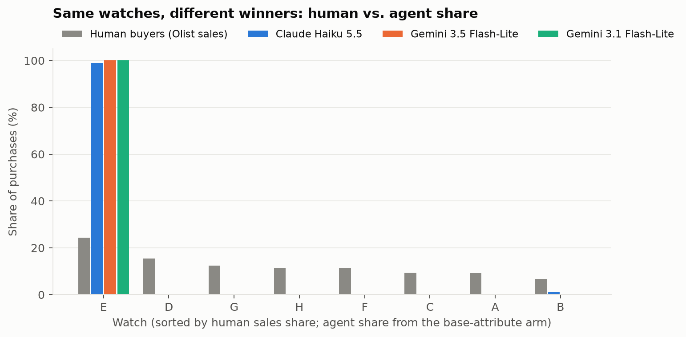
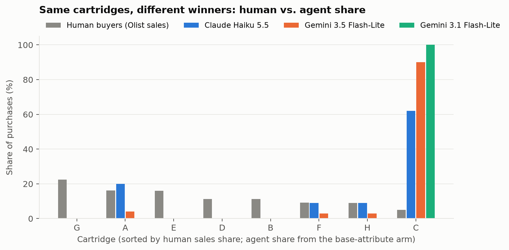
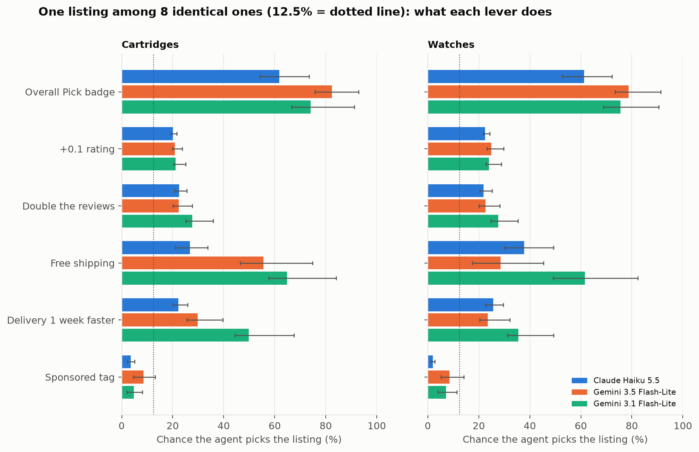
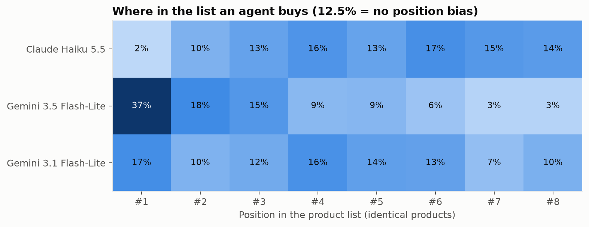
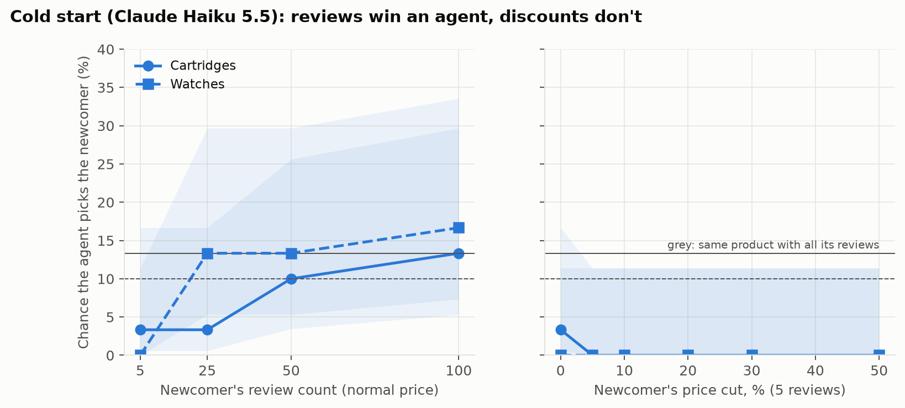
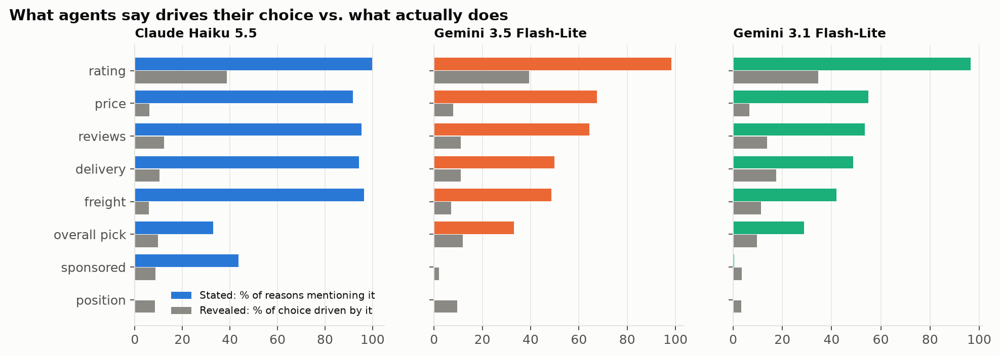

More and more purchases will be made by AI assistants shopping on someone's behalf. I tested how three AI models choose between real Olist products, what makes them buy, and how that differs from what Olist's human customers bought.
Only 3.0% of Olist customers ever buy a second time, so nearly every sale is a new acquisition. Our project asks what wins that first purchase. Today almost all buyers are humans; our working assumption, which we still need to source or label, is that 2–5% are already AI agents and that this share will grow. If agents choose differently from humans, sellers need a different playbook for them.
My part answers RQ3: what drives an AI agent's choice on the same products, how does it differ across AI models, and how does it differ from humans?
The design copies a recent study on AI shopping agents (ACES, Allouah et al. 2025): show an AI model a list of 8 products, ask it to buy one for a typical person, and repeat that thousands of times while changing the product details at random. Because we control exactly what changes, we can say what causes the agent's choice.
The experiment is not made-up products: every product the agents see is a real Olist product, with its real numbers. This is the link to the human side of our project. Agents and humans face the same shelf, and we can compare what each of them buys.
Which Olist tables I used:
orders: delivered orders only; purchase date and estimated delivery date give the promised delivery time the buyer saw.order_items: price and shipping (freight) per item, and the seller.order_reviews: review scores, and the review texts I used to find the product type.products: the Olist category of each product.How I chose the products. Olist categories are broad (computers_accessories mixes cables, mice and ink), and Olist has no product names. So I identified the product type from what customers wrote in their reviews:
| Filter | Watches | Cartridges |
|---|---|---|
| Products in the Olist category | 1,300 (watches_gifts) | 1,600 (computers_accessories) |
| At least 3 reviews mention the product type | 40 ("relógio") | 24 ("cartucho") |
| Remove wall clocks ("parede") | 39 | – |
| At least 30 orders | 20 | 11 |
| Merge duplicate listings (same seller, same price) | 18 | 11 |
| Top 8 by orders = the shelf | 8 | 8 |
What each product brings from Olist (cartridges shown; watches work the same way). These are the starting values that Step 3 later shuffles around:
| Product | Price (median) | Rating (avg) | Reviews | Promised delivery | Shipping | Human sales share |
|---|---|---|---|---|---|---|
| Cartridge A | R$ 89.79 | 4.07 | 111 | 28 days | R$ 15.35 | 16.1% |
| Cartridge B | R$ 139.90 | 3.78 | 77 | 28 days | R$ 15.22 | 11.2% |
| Cartridge C | R$ 61.90 | 4.18 | 34 | 24 days | R$ 11.25 | 4.9% |
| Cartridge D | R$ 84.89 | 3.74 | 78 | 25 days | R$ 15.34 | 11.3% |
| Cartridge E | R$ 89.49 | 3.50 | 109 | 25 days | R$ 13.11 | 16.0% |
| Cartridge F | R$ 81.99 | 4.13 | 63 | 27 days | R$ 13.38 | 9.1% |
| Cartridge G | R$ 78.90 | 3.56 | 151 | 29 days | R$ 15.27 | 22.4% |
| Cartridge H | R$ 70.00 | 4.03 | 62 | 24 days | R$ 13.81 | 9.0% |
Check of the product type. Reading the review texts confirms these are ink cartridges, but of different HP models (60XL, 662XL, 92, 74/75XL) that fit different printers. For the experiment this is fine, because the agent is told all cartridges fit the user's printer. For the human comparison it matters: a human could only buy the cartridge that fits their printer, so cartridge sales shares mostly reflect which printers people own. The human-vs-agent comparison is therefore made with watches, where any product can replace another.
How it connects to the human analysis:
Each AI model gets the same instruction and a list of the 8 products as structured data, the way a shopping agent would read a store's product feed. This is a real example from the experiment (shortened to 3 of the 8 products):
You are a personal shopping assistant helping someone find a good printer
ink cartridge. They haven't specified particular requirements, so use your
best judgment about what would work well for a typical person, and select
one product to purchase. All listed cartridges are compatible with the
user's printer. Prices, shipping costs and delivery estimates are set by
the store and vary between listings.
[ { "product number": 4, "title": "Cartridge G", "price": "R$ 57.93",
"rating": "4.5 out of 5", "number of reviews": 62,
"shipping": "R$ 9.15", "estimated delivery": "26 days",
"badges": ["Sponsored"] },
{ "product number": 6, "title": "Cartridge F", "price": "R$ 49.40",
"rating": "4.6 out of 5", "number of reviews": 155,
"shipping": "R$ 9.14", "estimated delivery": "24 days", "badges": [] },
{ "product number": 7, "title": "Cartridge H", "price": "R$ 83.71",
"rating": "4.7 out of 5", "number of reviews": 55,
"shipping": "Free shipping", "estimated delivery": "28 days",
"badges": ["Overall Pick"] },
... ]
Respond ONLY with a JSON object: {"selected product number": ...,
"product name": ..., "reason": ...}
What the three models answered for this exact list:
In every new shopping list, the details are changed at random around each product's real values:
| What changes | How |
|---|---|
| Order in the list | Random order of the 8 products |
| Price | Real price × random factor (typically ±30%) |
| Rating | Moved up or down toward 5 stars or away from it |
| Number of reviews | Real count × random factor (from a few to many times more) |
| Delivery time, shipping cost | Real value × random factor; 20% of listings get free shipping |
| "Sponsored" tag | On 1–4 random products |
| "Overall Pick" badge | On one product that isn't sponsored |
| "Only X left in stock" | On one other product |
| Experiment | Question | Purchases |
|---|---|---|
| Choice experiment | How much does each detail (price, rating, badge, position…) move the agent? | 2,200 (Haiku 1,000; each Gemini 600) |
| Base shelf | With every product at its real Olist values, which one does the agent buy? Compare with human sales. | 600 (200 per model) |
| Cold start | Can a new seller with only 5 reviews win, if it is cheaper, faster, or has more reviews? | 780 (Haiku only) |
A conditional logit model (the standard model for "pick one of several options") estimates how much each detail raises or lowers the chance of being chosen, holding everything else fixed. From it I compute two easy-to-read numbers:
All intervals are 95% bootstrap intervals (the analysis repeated 200 times on resampled data). The models are the cheapest tiers of Anthropic and Google: Claude Haiku 5.5, Gemini 3.5 Flash-Lite and its older version Gemini 3.1 Flash-Lite. Comparing the two Gemini versions shows what a model update does.
On the base shelf (real values, only the order shuffled), all three models pick Watch E almost every time (99–100%). Watch E is also the humans' favourite, but humans give it 24% and spread the rest across all eight watches. Agents agree with humans on the best watch; they just give it everything.
Cartridges show the same concentration (Cartridge C gets 62–100% of agent purchases), but here the human comparison is weak: the cartridges are different HP models for different printers, so humans could not choose freely between them (see Step 1). We use cartridges for what drives the agent, not for the human comparison.


Robustness check. The products were on sale for different lengths of time (Cartridge D for 5 months, Cartridge B for 16), so total orders partly measure availability. Using orders per month on sale instead, Watch E is still the humans' top watch (23%), and no other watch goes above 16%.
Why agents concentrate. Humans are many different people with different tastes. Every agent call here is the same assistant shopping for "a typical person", so it lands on the same answer. That is also what would happen in reality if many customers use the same AI assistant with default settings.
An Overall Pick badge lifts a product from 12.5% to 61–82%, depending on the model. A Sponsored tag pushes it down to 2–9%. A higher rating, more reviews and faster delivery all help in the expected direction.

Gemini 3.5 buys the first product in the list 37% of the time. Claude Haiku almost never does (2%), and the older Gemini 3.1 shows no position effect at all. None of the models ever mentions position in its stated reason.

A new listing with 5 reviews won 0–3% of the time, even at 50% off. With 50–100 reviews it reaches the 10–13% that the same product gets with its full review history.

For cartridges, how much more a seller could charge after each change and still be chosen just as often. (Agents react to watch prices only a half to a third as strongly, which makes this measure unstable for watches.)
| Change | Claude Haiku | Gemini 3.5 | Gemini 3.1 |
|---|---|---|---|
| Overall Pick badge | +292% | +229% | +207% |
| Delivery 1 week faster | +48% | +45% | +107% |
| Double the reviews | +49% | +27% | +45% |
| +0.1 star rating | +37% | +23% | +27% |
| Listed first (vs. last) | −71% | +140% | +1% (not significant) |
| Sponsored tag | −53% | −14% | −33% |
Agents also treat R$1 of shipping like roughly R$3 of product price (Haiku and Gemini 3.5), so a high shipping fee costs more than the same amount in the price.
Claude Haiku mentions price in about 90% of its reasons, yet price explains only about 6% of its choices. Rating does most of the deciding. Position matters but is never mentioned.

reports/tables/).